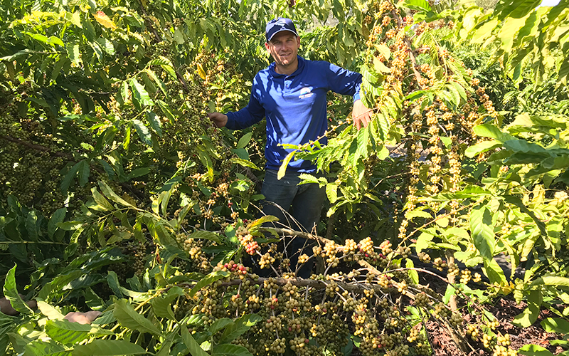
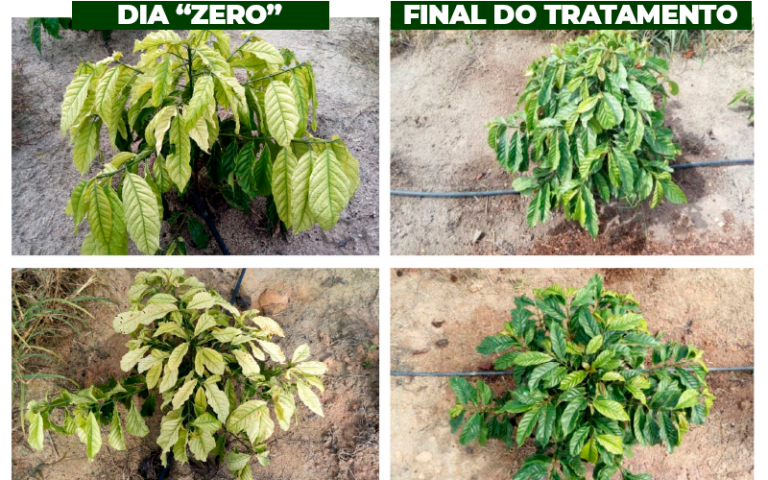
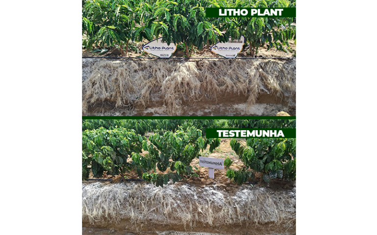
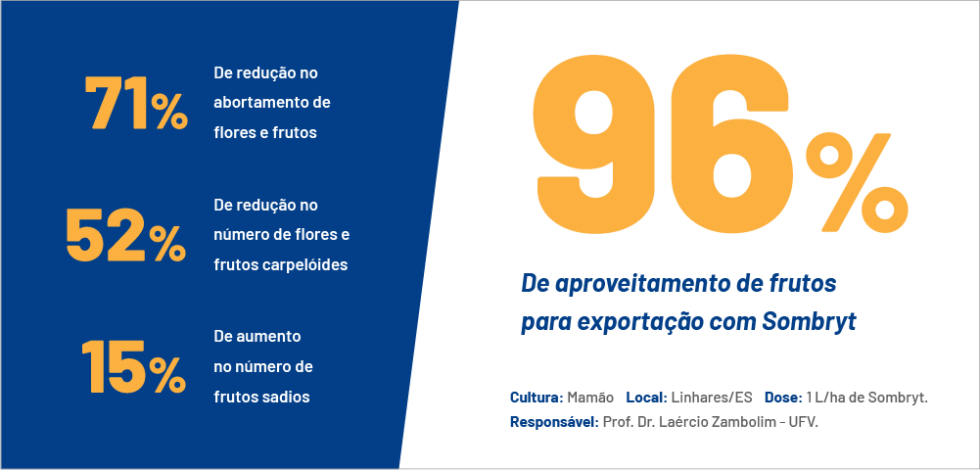
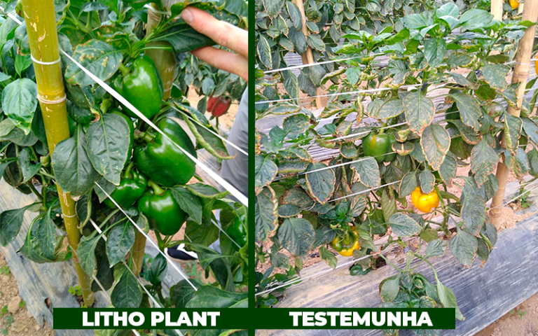
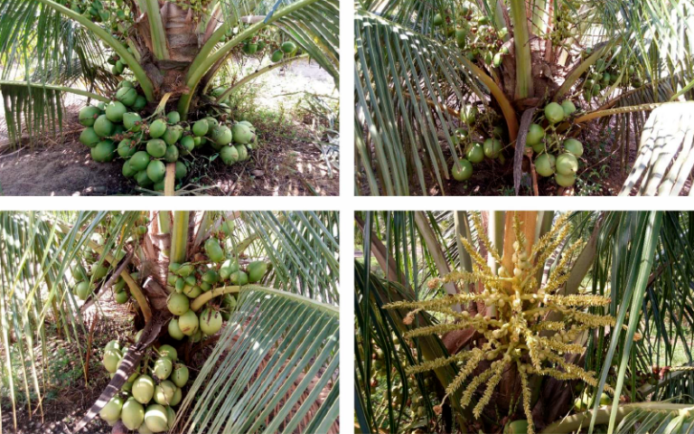

Manejo nutricional completo, com biofertilizantes e fertilizantes especiais,
para altas produtividades e qualidade superior em diferentes culturas.
Programa Revitalizar
Programa Revitalizar
Acreditamos que produzir com alta qualidade é a única forma de agregar rentabilidade
e garantir a longevidade das lavouras brasileiras.
Dentre os principais fatores necessários para se produzir café, frutas, grãos e hortaliças
com qualidade superior, destaca-se como decisivo o manejo nutricional de plantas
e a fertilidade dos solos.
Os
Biofertilizantes Litho Plant
possuem tecnologias únicas, que permitem explorar todo o potencial produtivo das lavouras.
O programa foi criado com o intuito de trazer ao produtor rural o manejo de fertilidade
e nutricional completo para obter altas produtividades e qualidade superior,
possibilitando maiores ganhos e posicionamento diferenciado de mercado ao agricultor participante.
Assista ao vídeo e veja como o Programa Revitalizar é aplicado no campo.
Campo aplicado com Biofertilizantes Litho Plant e manejo completo do Programa Revitalizar.
Resultados do Programa
Programa Revitalizar Litho Plant
Pesquisas científicas e resultados de campo.
Cenários reais que comprovam a eficiência do Programa Revitalizar
em diferentes culturas, regiões e safras.
Média de ganho em produtividade*+20–25%em áreas acompanhadas com manejo completo






Resultado 1 • Café
Aumento expressivo de produtividade em café
Lavoura conduzida com o Programa Revitalizar desde o início, com incremento
consistente de produtividade e manutenção de qualidade de safra em safra.
Produtividade 2018130 sc/ha
Produtividade 2019156 sc/ha
Ganho em 1 safra+26 sc/ha
“Eu uso os produtos Litho Plant há mais de 8 anos. Já usei praticamente toda a linha.
Tive uma lavoura que recebeu o tratamento Litho Plant desde o início.”
Mais informações:
Deângelo Rigatto • Sítio Rigatto • Córrego Veloso, Chumbado • Sooretama – ES
Resultado 2
Produção consistente em área de referência
Área acompanhada sob Programa Revitalizar, com foco em estabilidade de produção
e manutenção de qualidade ao longo das safras.
Mais informações:
Córrego das Pedras, S/N – Linhares – ES
Resultado 3
PDM em Sooretama – planejamento e manejo
Programa de Desenvolvimento de Manejo (PDM) integrando biofertilizantes
e manejo nutricional para ganho de produtividade.
Mais informações:
Sooretama – ES • Tulio Margotto e Walter Luiz Fontana
Resultado 4 • Mamão
Uso de Sombryt em mamão – Linhares
Dose de 1 L/ha de Sombryt em mamoeiro, com efeito em vigor, sanidade
e resposta fisiológica das plantas.
Mais informações:
Dose: 1L/ha Sombryt • Mamão • Linhares – ES
Prof. Dr. Laércio Zambolim – UFV
Resultado 5 • Pimentão
Pimentão Block – desempenho vegetativo e produtivo
Lavoura sob Programa Revitalizar, com foco em sanidade, enchimento de frutos
e produtividade por área.
Mais informações:
Caxixe – Venda Nova do Imigrante – ES
Resultado 6
Registro visual após 150 dias de tratamento
Plantas sob manejo Revitalizar, com vigor, arquitetura e resposta fisiológica
evidentes após 150 dias.
Mais informações:
Fazenda Conquista • Clóvis Otávio Rampinelli • Regência – Linhares – ES